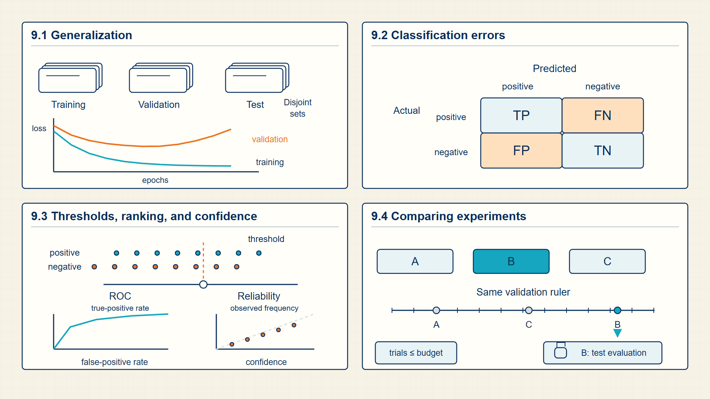
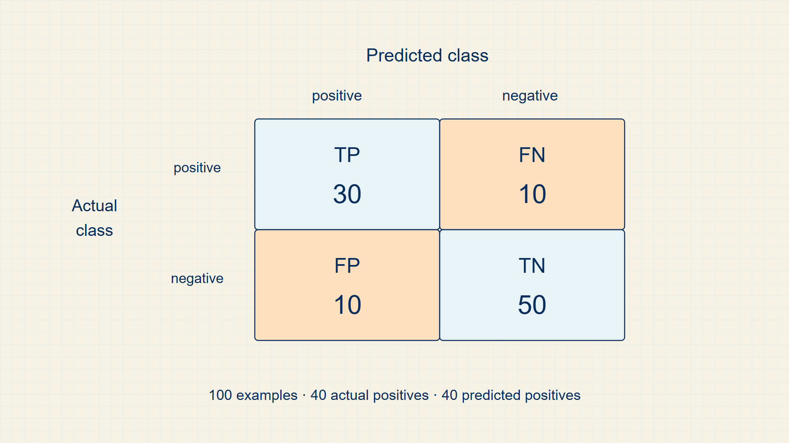

9 Validation & Testing: Catching Overfitting and Measuring Generalization
A model can memorize its training examples and still fail on unseen data. Evaluation separates training fit from useful performance on new examples.
A low training loss is not enough evidence that a model will work on new data. Held-out splits and task-appropriate metrics distinguish memorization, useful ranking, calibrated confidence, and real generalization.
In code, sklearn.metrics provides confusion matrices, precision/recall/F1, ROC AUC, and calibration measurements for the held-out predictions produced by a model.
Chapter 9 develops one required stage of the guide’s computation.

The numbered panels correspond to the chapter sections and show how each local result supplies the next operation.
9.1 Validating Generalization across Held-Out Data Splits
A data split is the first protection against fooling yourself with a model that only memorizes the examples it has already seen. The training split changes parameters, the validation split selects decisions, and the test split estimates final generalization.
- Training set: Examples used to compute gradients and update model parameters.
- Validation set: Examples used to select hyperparameters or checkpoints.
- Test set: Examples held out until final evaluation.
- Generalization: The ability to make useful predictions on new examples from the same task distribution.
The practical reason for splitting data is that optimization always improves the training objective if the model is flexible enough. A separate validation or test set asks a harder question: did the model learn a rule that transfers?
In language modeling, leakage can be subtle. Duplicate passages, near-duplicate prompts, or benchmark examples appearing in pretraining data can make test performance look stronger than it really is.
The training split determines parameter updates, the validation split supports model and threshold selection, and the test split estimates final performance after those choices are fixed.
Data leakage occurs when information from validation or test examples influences preprocessing, feature selection, deduplication, or training. The resulting metric then measures access to held-out information rather than generalization.
Bias and variance become visible only when the same modeling choice is tested on data it did not update on. A linear classifier that misses the same curved pattern in both training and validation data has high bias: its available features or decision rule are too limited. A large model that drives training loss down while validation loss rises has high variance: it has adapted to details of the training sample that do not recur reliably.
Learning curves make this diagnosis more concrete. When both curves remain high and close together, more data alone is unlikely to repair the representation or model family. When the training curve is low but the validation curve remains much higher, additional data, regularization, early stopping, or a simpler model can reduce the gap. The validation set helps choose among those remedies; the test set is kept untouched until that choice is complete.
A benchmark is a held-out task packaged with an input format, target rule, scoring protocol, and often a fixed prompt template. Benchmark scores are comparable only when those conditions match. A model can improve its next-token loss while failing a benchmark that requires a different output format, outside knowledge, calibration, or resistance to misleading prompts.
Held-out risk applies the same average loss to validation or test examples without updating model parameters.
Empirical risk:
\[ \widehat{R}(\theta)=\frac{1}{n}\sum_{i=1}^{n}L(f_\theta(x_i),y_i) \tag{9.1}\]
where n is number of observed training examples; \(x_{i}\), \(y_{i}\) is inputs and targets for example i; \(f_\theta\) is model with trainable parameters θ; L is per-example loss.
The training set supplies one loss per example. Summing those losses and dividing by n gives one scalar objective whose gradient combines the contribution of every example.
empirical risk measures fit to the observed sample; validation and test splits estimate how well that fit transfers beyond it.
Example: Empirical risk
For two losses 0.2 and 0.5, empirical risk is \((0.2+0.5)/2=0.35\).
Held-out splits separate choosing a model from reporting its expected behavior on new data. The chosen metric must match the target and the cost of different errors.
9.2 Choosing Classification Metrics
Evaluation metrics are functions of outcomes, not abstract model quality. The confusion matrix names which errors the model makes.
- True positive: A positive example predicted positive.
- False positive: A negative example predicted positive.
- False negative: A positive example predicted negative.
- True negative: A negative example predicted negative.
A confusion matrix preserves the four counts that accuracy compresses: true positives, false positives, true negatives, and false negatives. Precision asks how often a positive prediction is correct; recall asks how many positive examples were found. The preferred balance depends on the cost of the two error types.
A receiver operating characteristic curve changes the classification threshold and records true-positive rate against false-positive rate. Area under the curve summarizes ranking across thresholds, while calibration asks a different question: whether predictions near probability 0.7 are correct about 70 percent of the time.
Bias and variance describe two sources of predictive error. A model with too little flexibility can miss structure in both training and validation data; a highly flexible model can fit training examples while changing too much across samples. Held-out evaluation reveals the gap but does not identify its cause by itself.
Course benchmarks such as MMLU, TruthfulQA, and HellaSwag test different abilities. Their scores are measurements on particular datasets and protocols, not interchangeable definitions of general model quality.
Accuracy measures total correctness but can hide class imbalance.
Accuracy:
\[ \mathrm{accuracy}=\frac{TP+TN}{TP+TN+FP+FN} \tag{9.2}\]
where TP,TN,FP,FN is confusion-matrix counts.
accuracy can look strong even when one error type is unacceptable.
Precision asks how many predicted positives are correct.
Precision:
\[ \mathrm{precision}=\frac{TP}{TP+FP} \tag{9.3}\]
Recall asks how many actual positives were found.
Recall:
\[ \mathrm{recall}=\frac{TP}{TP+FN} \tag{9.4}\]
F1 is the harmonic mean of precision and recall.
F1:
\[ F_1=\frac{2PR}{P+R} \tag{9.5}\]
Example: Classification metrics from one confusion matrix
Suppose a test set contains 30 true positives, 50 true negatives, 10 false positives, and 10 false negatives.
Accuracy:
\((30 + 50) / 100 = 0.80\)
Precision:
\(\frac{30}{30 + 10} = 0.75\)
Recall:
\(\frac{30}{30 + 10} = 0.75\)
Changing the threshold changes these four counts, so it changes precision and recall together.
The same accuracy can conceal different false-positive and false-negative costs.
Code example: Confusion-matrix metrics and ROC AUC from fixed predictions
from sklearn.metrics import (
confusion_matrix,
precision_recall_fscore_support,
roc_auc_score,
)
y_true = [1, 1, 0, 0, 1, 0]
scores = [0.9, 0.4, 0.8, 0.2, 0.7, 0.1]
y_pred = [int(score >= 0.5) for score in scores]
print(confusion_matrix(y_true, y_pred))
print(precision_recall_fscore_support(y_true, y_pred, average="binary"))
print(roc_auc_score(y_true, scores))The thresholded metrics and threshold-free ranking metric describe different properties of the same predictions.
Six examples are sufficient for arithmetic inspection but not for a stable performance estimate.
Accuracy, precision, recall, and F1 emphasize different error patterns. Threshold curves show how a binary decision changes as the required probability changes.
9.3 Tuning Decision Thresholds with ROC and AUC Curves
A decision threshold converts a score or probability into a binary action, while calibration tests whether the reported probabilities match observed frequencies.
- TPR: True-positive rate, the same quantity as recall.
- FPR: False-positive rate.
- ROC AUC: Area under the ROC curve produced by sweeping the threshold.
Moving the threshold changes the balance between false positives and false negatives. A ROC curve records that trade-off by sweeping the threshold and plotting true-positive rate against false-positive rate.
Calibration asks a different question: when the model says 0.8, do events like this occur about 80 percent of the time? A model can rank examples well and still produce poorly calibrated probabilities.
Threshold selection depends on the cost of the two error types. Lowering the threshold usually increases recall and false positives; raising it usually increases precision while missing more positive cases.
A receiver operating characteristic (ROC) curve evaluates ranking across thresholds. Calibration evaluates probability scale. These are independent properties: a model may rank examples correctly while reporting probabilities that are systematically too high or too low.
Each threshold produces one point in ROC space.
ROC coordinates:
\[ \mathrm{TPR}=\frac{TP}{TP+FN},\quad\mathrm{FPR}=\frac{FP}{FP+TN} \tag{9.6}\]
where TPR is true-positive rate; FPR is false-positive rate.
Sweeping the classification threshold changes TP, FP, TN, and FN, and therefore produces different TPR/FPR points.
ROC curves evaluate ranking behavior across thresholds, not calibration.
AUC summarizes ranking quality across thresholds.
AUC:
\[ \mathrm{AUC}=\int_{0}^{1}\mathrm{TPR}(\mathrm{FPR})\,d\mathrm{FPR} \tag{9.7}\]
Example: ROC coordinates
If \(TP=40\),\(FN=10\),\(FP=20\),\(TN=30\), then \(TPR=0.8\) and \(FPR=0.4\).
Example: AUC
For ROC points (0,0), (0.5,0.8), (1,1), trapezoid area is \(0.2+0.45=0.65\).
ROC and AUC compare score rankings across thresholds; a deployed system must still choose one threshold for its operating context. Validation curves also reveal whether the model is underfitting or overfitting.
9.4 Diagnosing Model Capacity with the Bias-Variance Tradeoff
A modeling objective specifies which probability the model tries to estimate. This distinction matters because it controls what the model can answer and what kind of data it needs.
- Discriminative model: A model of P(y | x), useful for classification or scoring labels given an input.
- Generative model: A model of P(x) or P(x, y), useful for sampling, completing, or assigning probability to observations.
- Conditional generation: Generation controlled by an input context, prompt, image, table, or instruction.
Logistic regression is the first discriminative model in the course arc. An n-gram language model and a transformer decoder are generative in the sense that they define a distribution over continuations.
Modern LLMs blur the interface for users because a prompt can ask for classification, extraction, translation, or open-ended writing. Mathematically, the decoder still produces next-token distributions.
A discriminative model directly estimates a target such as a class label given an input. A generative model estimates a probability distribution over data or continuations, so it can score or produce complete sequences.
The choice changes the target tensor and inference loop. Classification needs one or more label positions; language modeling needs vocabulary targets across sequence positions and repeats prediction after each generated token.
Computation map
The computation starts with data and produces optimizer through the intermediate objects shown below.

The output of data is the input required by optimizer; the intermediate stages name the stored objects that make the transition possible.
Capacity and regularization affect the gap between training and validation behavior. Training closes that gap by repeatedly updating parameters from loss gradients.
9.5 Visualizing Confusion Matrices and ROC Decision Thresholds
Confusion-matrix counts and threshold sweeps expose different kinds of classification error.
Evaluation starts by counting outcomes. The four cells of the confusion matrix define the counts used by accuracy, precision, recall, and F1.

The matrix separates false positives from false negatives. That distinction matters whenever the cost of one error type is different from the other.
Evaluation checks whether the learned rule works beyond the rows that updated the parameters.
Optimization turns a scalar objective into parameter updates.